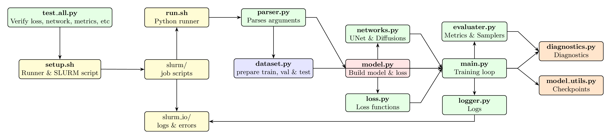

Project Structure
IPSL-AID/ # Project root
├── pyproject.toml # Python project configuration
├── setup_diffusion.sh # Main setup script
│
├── IPSL_AID/ # Main Python package
│ ├── __init__.py # Package initialization
│ ├── main.py # CLI entry point (training / inference)
│ ├── dataset.py # Data loading and preprocessing
│ ├── networks.py # Diffusion models and UNet-based architectures
│ ├── model.py # Main model wrapper
│ ├── model_utils.py # Model utilities
│ ├── loss.py # Loss functions
│ ├── logger.py # Logging and monitoring
│ ├── utils.py # Shared utilities
│ ├── diagnostics.py # Evaluation and visualization
│ ├── evaluater.py # Error metrics (Sampler, MAE, RMSE, CRPS, etc.)
│
├── tests/ # Unit tests
│ └── test_all.py # Comprehensive test suite
│
├── slurm_io/ # I/O utilities for SLURM
│ ├── diffusion_model.err # Error logging utilities
│ └── diffusion_model.out # Output logging utilities
│
├── slurm/ # HPC job scripts
│ ├── run_<experiment_name>.sh # Executable run scripts
│ └── sbatch_diffusion_*.sh # SLURM submission scripts
│
└── outputs/ # Generated outputs (not in version control)
└── [experiment_timestamp]/ # Experiment-specific directory
├── config.yaml # Full run configuration
├── checkpoints/ # Model checkpoints
├── logs/ # Training logs
└── results/ # Generated samples and metric evaluations
Key Modules Explained
- main.py
Command-line interface for training and inference. Handles argument parsing, configuration loading, and dispatching to appropriate modes. Supports both single-run and batch processing.
- dataset.py
Data loading, preprocessing, and augmentation. Implements the random block sampling strategy for global training. Handles ERA5 data loading, normalization, and batch generation with spatial and temporal conditioning.
- networks.py
UNet-based architectures adapted for climate data, including ADM-style UNets and conditional variants. Supports multiple attention mechanisms and conditioning strategies for spatiotemporal context.
- model.py
Main model wrapper that integrates diffusion processes with neural networks. Handles training loops, inference procedures, and checkpoint management. Supports multiple diffusion formulations through configuration.
- model_utils.py
Utilities for model creation, inspection, and management. Includes functions for parameter counting, model summarization, and distributed training setup.
- loss.py
Implementation of diffusion loss functions including EDM, VP, VE, and iDDPM formulations. Contains noise schedulers and weighting schemes for stable training.
- logger.py
Logging and monitoring utilities. Supports console logging, file logging, and optional integration with TensorBoard and Weights & Biases for experiment tracking.
- utils.py
Shared utilities for configuration management, file operations, tensor manipulation, random seeding, timing, and parallel processing.
- diagnostics.py
Visualization and analysis tools for evaluating model performance, including spatial error maps, PDF comparisons, spectral analysis, and Cartopy-based geospatial plotting.
- evaluater.py
Computation of evaluation metrics: MAE, RMSE, R², CRPS, KL divergence, power spectra, and extreme value statistics. Supports both deterministic and probabilistic evaluation.
{kind=link}

Flowchart of IPSL-AID’s architecture and data flow.
Data Flow
Input: Low-resolution climate fields + spatiotemporal context (lat/lon, time, topography)
Preprocessing: Normalization, random block sampling, augmentation
Diffusion: Noise addition and denoising process (implemented in model.py)
Network: UNet processing with multi-scale conditioning
Output: High-resolution residual fields
Postprocessing: Addition to coarse-up field, denormalization, quality checks
Configuration Management
IPSL-AID uses a hybrid configuration system:
Command-line arguments: Basic runtime options
Setup script: Main experiment configuration (
setup)Runtime generation: SLURM scripts and run configurations
Output capture: Full configuration saved with each experiment
Example configuration generation:
# From setup script
./setup
# Generates:
# - slurm/run_diffusion.sh (executable script)
# - slurm/sbatch_diffusion_[used_setup].sh (SLURM submission)
Testing Strategy
The test suite in tests/test_all.py uses Python’s unittest framework:
# Run all tests
python tests/test_all.py
# Run specific test module
python tests/test_all.py loss
Tests cover: - Unit tests: Individual functions and classes - Integration tests: Data loading and model initialization - Validation tests: Numerical correctness and stability - Performance tests: Memory usage and speed benchmarks
HPC Integration
Designed for HPC systems:
SLURM integration: Automatic job script generation
Multi-GPU support: Distributed training on 4× NVIDIA A100
Shared storage: Optimized for parallel filesystems
Resource management: Configurable memory and time limits
Development Workflow
# 1. Environment setup
uv venv --python=python3.11
source .venv/bin/activate
uv pip install -r pyproject.toml
# 2. Configuration
./setup # Edit parameters as needed
# 3. Testing
python tests/test_all.py
# 4. Local debugging (small scale)
python -m IPSL_AID.main --debug --epochs 2 --batch_size 4
# 5. HPC submission
sbatch slurm/sbatch_diffusion_*.sh
# 6. Analysis
All outputs saved in results/ for study.